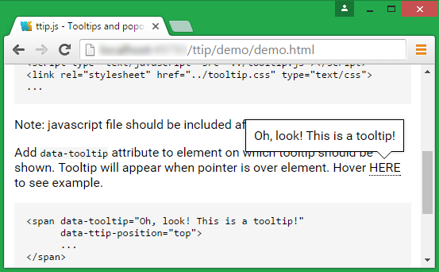

ttip.js
Tooltips and popovers
Usage
Include style and js file:
...
<script type="text/javascript" src="../tooltip.js"></script>
<link rel="stylesheet" href="../tooltip.css" type="text/css">
...
Note: javascript file should be included after jQuery
Add data-tooltip attribute to element on which tooltip should be shown.
Tooltip will appear when pointer is over element. Hover
HERE
to see example.
<span data-tooltip="Oh, look! This is a tooltip!"
data-ttip-position="top">
...
</span>
data-ttip-position attribute can be omitted, then tooltip will be placed
automatically based on position of tooltipped element on the page. Also position can de defined
explicitly. Possible values: top, bottom, right,
left.
Tooltip position will be calculated dynamically, so it will fit into viewport event on the sides of the page
